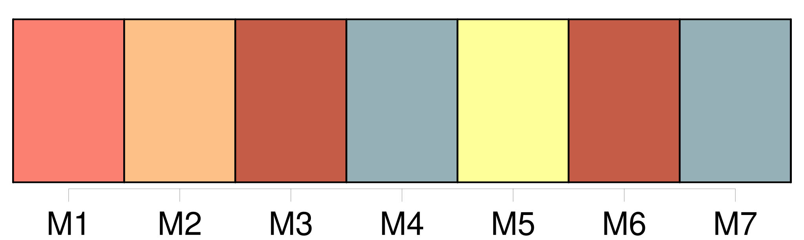
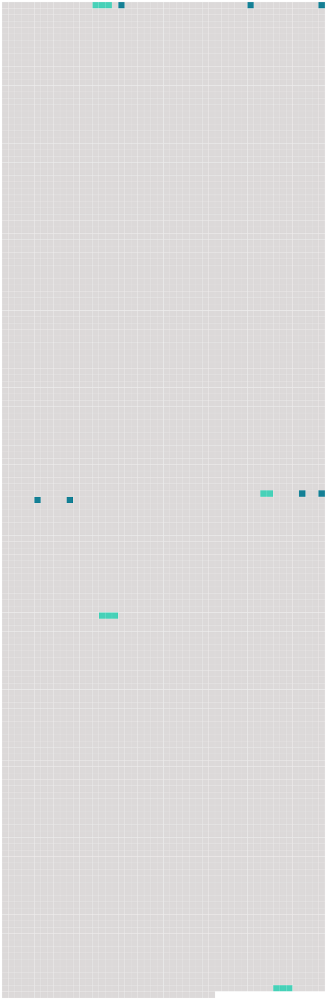

Longueur nb maillons : 11 mentions |
 |
Dans l'écurie, où vingt chevaux eussent pu tenir à l'aise, [un maigre bidet] , [dont] la croupe saillait en protubérances osseuses, tirait d'un râtelier vide quelques brins de paille du bout de [ses] dents jaunes et déchaussées, et de temps en temps [tournait] vers la porte un œil enchâssé dans une orbite au fond de laquelle les rats de Montfaucon n'eussent pas trouvé le plus léger atome de graisse. [86 phrases]
» [21 phrases]
Sigognac, tout pauvre qu'il fût, était toujours à leurs yeux le seigneur, et la décadence de cette famille ne les frappait pas comme elle eût fait les étrangers ; et c'était cependant un spectacle assez grotesquement mélancolique que de voir passer le jeune baron dans ses vieux habits, sur [son vieux cheval] , accompagné de son vieux chien, comme ce chevalier de la Mort de la gravure d'Albert Dürer. [79 phrases] Les bœufs dételés allèrent prendre place à l'écurie à côté [du bidet blanc] ; les comédiennes sautèrent à bas de la charrette, faisant bouffer leurs jupes fripées, et montèrent, guidées par Sigognac, dans la salle à manger, la pièce la plus habitable de la maison. |
 |
Il est possible de télécharger la ressource sur la page Ortolang |
Si vous avez des questions ou vous voyez des erreurs, merci d'envoyer un mail à silvia.federzoni89@gmail.com |